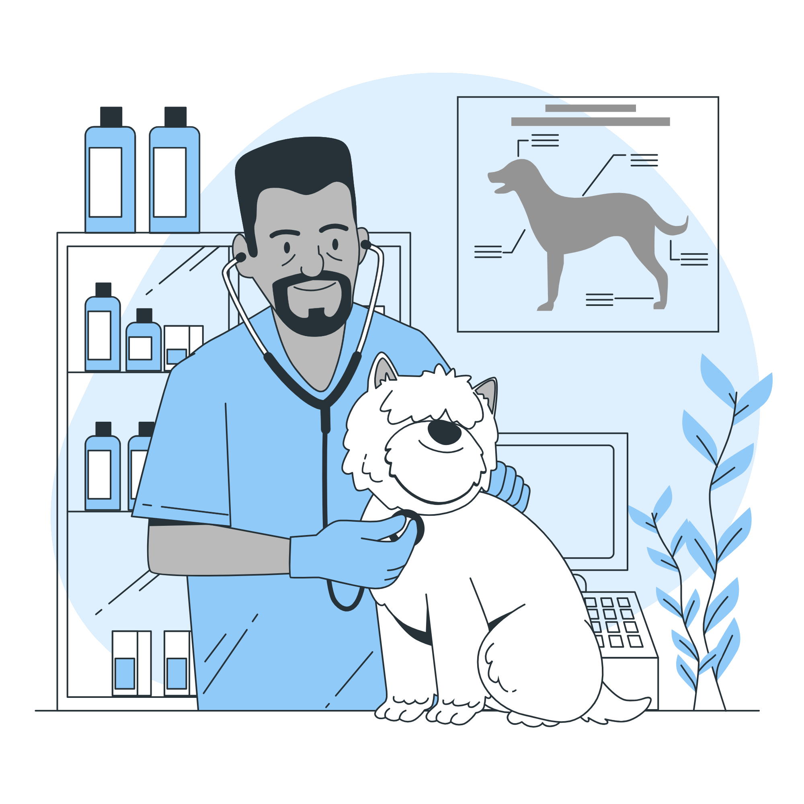
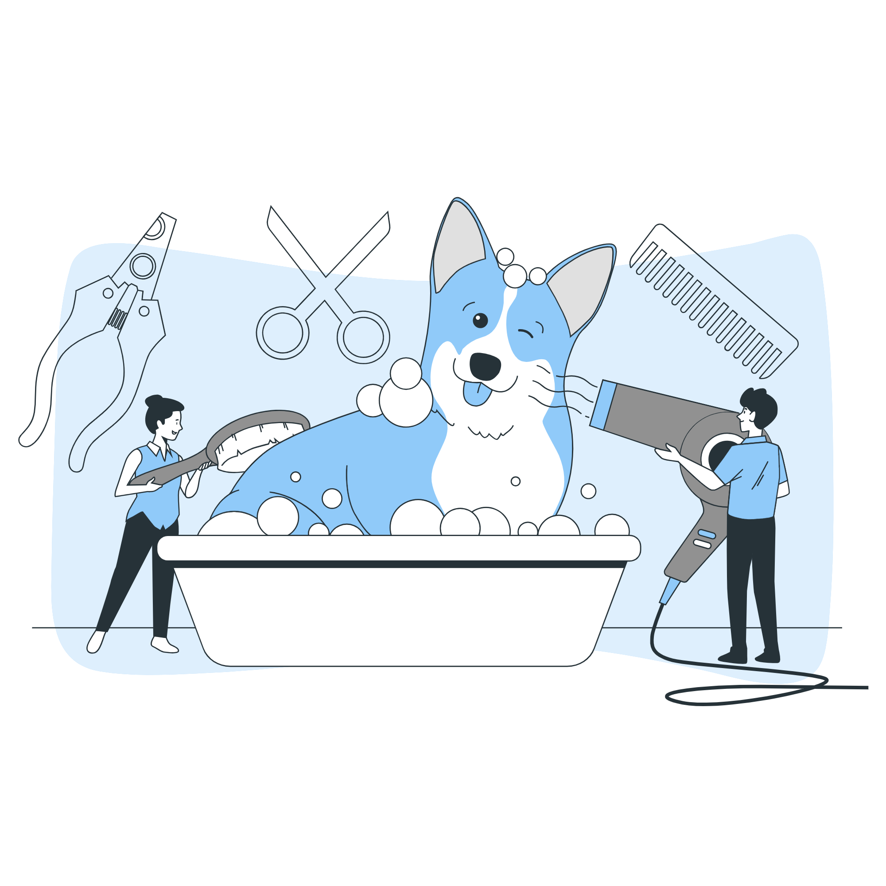

<ion-header [translucent]="true">
  <ion-toolbar>
    <ion-title>
      Serviços
    </ion-title>
  </ion-toolbar>
</ion-header>

<ion-content class="ion-padding" >

  <div class="thumbnail-container">
    <ion-thumbnail (click)="setOpen(true)">
      
      <p>Agendar Consulta</p>
    </ion-thumbnail>
    <ion-thumbnail (click)="setOpen(true)">
      
      <p>Banho e Tosa</p>
    </ion-thumbnail>
  </div>

  <ion-modal [isOpen]="isModalOpen">
    <ng-template>
      <ion-header>
        <ion-toolbar>
          <ion-title>Agendar Consulta</ion-title>
          <ion-buttons slot="end">
            <ion-button (click)="setOpen(false)">Fechar</ion-button>
          </ion-buttons>
        </ion-toolbar>
      </ion-header>
      <ion-content class="ion-padding">
        <ion-select label="Selecionar Pet" labelPlacement="floating">
          <ion-select-option value="spike">spike</ion-select-option>
          <ion-select-option value="bob">bob</ion-select-option>
        </ion-select>
        <ion-datetime></ion-datetime>
        <ion-select label="Selecionar Serviço" name="service" interface="action-sheet">
          <ion-select-option value="consulta-veterinaria">Consulta Veterinária</ion-select-option>
          <ion-select-option value="consulta-nutricao">Consulta de Nutrição</ion-select-option>
          <ion-select-option value="consulta-comportamental">Consulta Comportamental</ion-select-option>
          <ion-select-option value="vacina">Vacinação</ion-select-option>
          <ion-select-option value="exame-sangue">Exame de Sangue</ion-select-option>
          <ion-select-option value="radiografia">Radiografia</ion-select-option>
          <ion-select-option value="cirurgia">Cirurgia</ion-select-option>
        </ion-select>
        <ion-input
        id="custom-input"
        label="Complemento(Opcional)"
        labelPlacement="floating"
        [counter]="true"
        maxlength="300"
      ></ion-input>
        <ion-button class="botaoCadastro" (click)="agendarConsulta(false)">Cadastrar Pet</ion-button>
      </ion-content>
    </ng-template>
  </ion-modal>
</ion-content>


<style>

.thumbnail-container {
  display: flex;
  justify-content: center;
  align-items: center;
  flex-wrap: wrap;
  gap: 10px;
}

ion-thumbnail {
  display: flex;
  flex-direction: column;
  align-items: center;
  cursor: pointer;
}
</style>
